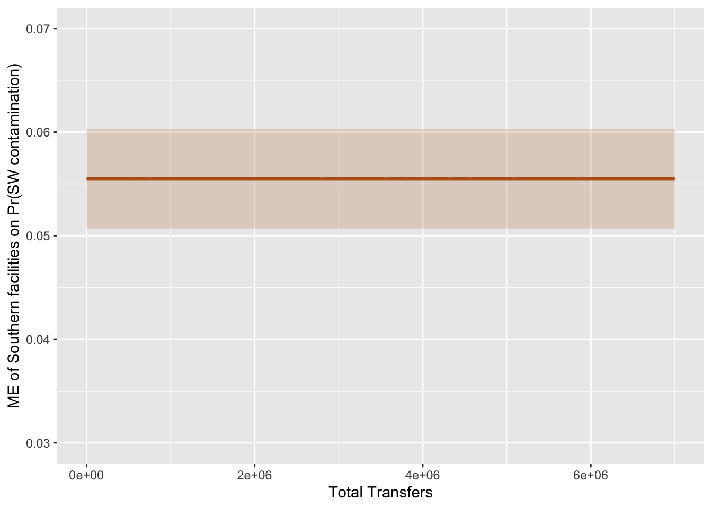

Warning: package 'ggplot2' was built under R version 4.5.2
Warning: package 'tibble' was built under R version 4.5.2
Warning: package 'tidyr' was built under R version 4.5.2
Warning: package 'readr' was built under R version 4.5.2
Warning: package 'purrr' was built under R version 4.5.2
Warning: package 'dplyr' was built under R version 4.5.2
Warning: package 'lubridate' was built under R version 4.5.2
── Attaching core tidyverse packages ──────────────────────── tidyverse 2.0.0 ──
✔ dplyr 1.2.1 ✔ readr 2.2.0
✔ forcats 1.0.1 ✔ stringr 1.6.0
✔ ggplot2 4.0.2 ✔ tibble 3.3.1
✔ lubridate 1.9.5 ✔ tidyr 1.3.2
✔ purrr 1.2.1
── Conflicts ────────────────────────────────────────── tidyverse_conflicts() ──
✖ dplyr::filter() masks stats::filter()
✖ dplyr::lag() masks stats::lag()
ℹ Use the conflicted package (<http://conflicted.r-lib.org/>) to force all conflicts to become errors
library(broom)
Warning: package 'broom' was built under R version 4.5.2
library(modelsummary)
Warning: package 'modelsummary' was built under R version 4.5.2
library(estimatr)library(marginaleffects)
Warning: package 'marginaleffects' was built under R version 4.5.2
library(readxl)library(juanr)
Question 1
The EPA’s Toxic Release Inventory (TRI) Program reports on the waste management of certain toxic chemicals that pose a threat to human health and the environment. There are 77,295 observations of industrial facilities that share their reports on the quantities of toxic chemicals released into the environment on site, the quantities transferred off site to other facilities and summary data concerning releases.
For this assignment, I will see if there is an effect of chemical releases within surface water (Y) on facilities in the South versus not in the South (x). Are there more occurrences one way or another?
Facilities transfer chemical waste to Publicly owned treatment works (POTW) in an attempt to counteract emissions and seepage rates. It is unclear by the data whether this process takes place before or after contamination within the environment. Given that there is still a substantial amount of chemicals that run off into surrounding communities even with transfer, we will control for this to pay attention to those rates.
# Load data waste =read_csv("data/2024_us.csv") %>% janitor::clean_names()
Warning: One or more parsing issues, call `problems()` on your data frame for details,
e.g.:
dat <- vroom(...)
problems(dat)
Rows: 77295 Columns: 122
── Column specification ────────────────────────────────────────────────────────
Delimiter: ","
chr (30): 2. TRIFD, 4. FACILITY NAME, 5. STREET ADDRESS, 6. CITY, 7. COUNTY,...
dbl (85): 1. YEAR, 3. FRS ID, 10. BIA, 12. LATITUDE, 13. LONGITUDE, 22. INDU...
lgl (7): 14. HORIZONTAL DATUM, 25. SIC 2, 26. SIC 3, 27. SIC 4, 28. SIC 5, ...
ℹ Use `spec()` to retrieve the full column specification for this data.
ℹ Specify the column types or set `show_col_types = FALSE` to quiet this message.
# A tibble: 77,295 × 9
x4_facility_name x8_st x53_5_3_water x65_on_site_release_…¹
<chr> <chr> <dbl> <dbl>
1 CHEVRON PHILLIPS CHEMICAL CO LP TX 0 42134
2 POLYNT COMPOSITES USA INC. (FORME… IL 0 1119
3 FREUDENBERG-NOK SEALING TECHNOLOG… NH 5 14
4 PRODUCERS DAIRY FOODS INC CA 0 10
5 PHILLIPS 66 CO BILLINGS REFINERY MT 0 13528.
6 ALLFAST FASTENING SYSTEMS LLC CA 0 0
7 CHEMICAL WASTE MANAGEMENT AL 0 90
8 FORD MOTOR CO SHARONVILLE PLANT OH 0 130
9 OHIO REFINING CO OH 0 3300
10 GIBSON GENERATING STATION IN 0 51027
# ℹ 77,285 more rows
# ℹ abbreviated name: ¹x65_on_site_release_total
# ℹ 5 more variables: x106_6_2_total_transfer <dbl>, South <dbl>, water <dbl>,
# total_thousand_pounds <dbl>, transfer_thousand_pounds <dbl>
Many cases of environmental justice concern are located in the South, especially in proximity to rural and marginalized communities. Surface and groundwater quality are of those concerns with the prominence of agriculture industry. I foresee that, given that context, there will be a higher rate of chemical seepage into surface water from facilities within the South.
To add the background context of the proportion of water contamination within the scope of all contamination, I will look at a difference of means for the total quantities of the chemicals released to the air, water, and land.
# By hand means group_means = new_waste %>%group_by(South) %>%summarize(`Water`=mean(water),`Total Release (Thousands of Pounds)`=mean(total_thousand_pounds),`% of sample`=100*n() /nrow(new_waste) )group_means
# A tibble: 2 × 4
South Water `Total Release (Thousands of Pounds)` `% of sample`
<dbl> <dbl> <dbl> <dbl>
1 0 0.106 43.6 60.7
2 1 0.162 26.3 39.3
# Difference in Means by_hand = group_means %>%select(-`% of sample`) %>%pivot_longer(-South, names_to ="Outcome", values_to ="mean") %>%pivot_wider(names_from = South, values_from = mean) %>%mutate(Difference =`1`-`0`) # South minus Non-South# Standard Error n_S =sum(new_waste$South ==1)n_NS =sum(new_waste$South ==0)by_hand_se = by_hand %>%mutate(SE =sqrt(`1`* (1-`1`) / n_S +`0`* (1-`0`) / n_NS),z = Difference / SE )
Warning: There was 1 warning in `mutate()`.
ℹ In argument: `SE = sqrt(`1` * (1 - `1`)/n_S + `0` * (1 - `0`)/n_NS)`.
Caused by warning in `sqrt()`:
! NaNs produced
by_hand_se
# A tibble: 2 × 6
Outcome `0` `1` Difference SE z
<chr> <dbl> <dbl> <dbl> <dbl> <dbl>
1 Water 0.106 0.162 0.0554 0.00255 21.7
2 Total Release (Thousands of Pounds) 43.6 26.3 -17.3 NaN NaN
We can see that there is a higher average of total chemical release in thousands of pounds is higher in facilities that are not located in the South, which makes sense given the higher amount of states that are observed in that category. However, against the background of total releases, there appears to be a higher proportion of surface water contamination by facilities in Southern states as they have a higher average of contamination in comparison to facilities in non-southern states.
Difference: 0.0554 => 5%
# Classical linear model theory mod_water =lm(water ~ South + transfer_thousand_pounds + total_thousand_pounds, data = new_waste)modelsummary(mod_water,title ="Outcome: Chemical Release Within Surface Water ",stars =TRUE,gof_omit ="IC|Log|Adj|F|RMSE",coef_rename =c("(Intercept)"="Intercept","South"="South","transfer_thousand_pounds"="Total Transfers","total_thousand_pounds"="Total Waste" ))
Outcome: Chemical Release Within Surface Water
(1)
+ p < 0.1, * p < 0.05, ** p < 0.01, *** p < 0.001
Intercept
0.105***
(0.002)
South
0.055***
(0.002)
Total Transfers
0.000***
(0.000)
Total Waste
0.000***
(0.000)
Num.Obs.
77295
R2
0.010
# Logit modelmod_water_logit =glm(water ~ South + transfer_thousand_pounds + total_thousand_pounds, data = new_waste, family =binomial())
Warning: glm.fit: fitted probabilities numerically 0 or 1 occurred
modelsummary(mod_water_logit,title ="Outcome: Chemical Release Within Surface Water ",stars =TRUE,gof_omit ="IC|Log|Adj|F|RMSE",coef_rename =c("(Intercept)"="Intercept","South"="South","transfer_thousand_pounds"="Total Transfers","total_thousand_pounds"="Total Waste" ))
Profiled confidence intervals may take longer time to compute.
Use `ci_method="wald"` for faster computation of CIs.
Outcome: Chemical Release Within Surface Water
(1)
+ p < 0.1, * p < 0.05, ** p < 0.01, *** p < 0.001
Intercept
-2.155***
(0.015)
South
0.487***
(0.022)
Total Transfers
0.000***
(0.000)
Total Waste
0.000***
(0.000)
Num.Obs.
77295
exp(coef(mod_water_logit)["South"])
South
1.627713
Within the linear model, the coefficient for the South matches the difference in means displaying that when a facilities is located in the South, their likelihood for surface water contamination increases by 5.5 percentage points.
According to the logit model, facilities in southern states have ~1.6x the odds of having surface water contamination. In essence, facilities in the South have 1.6% more incidents of surface water contamination than those not in the South.
# A tibble: 2 × 2
South `Pr(water)`
<dbl> <dbl>
1 0 0.106
2 1 0.162
0.162-0.106
[1] 0.056
The probability of surface water contamination by facilities located in the South (16%) vs not in the South (11%) reflects the group means we calculated earlier. The effect of surface water contamination by facilities given their placement in the South is approximately 0.056, matching the group mean difference.
ggplot(me_water, aes(x = transfer_thousand_pounds, y = estimate)) +geom_ribbon(aes(ymin = conf.low, ymax = conf.high),alpha =0.2, fill ="#B8611A") +ylim(0.03, 0.07) +geom_line(color ="#B8611A", linewidth =1.3) +labs(x ="Total Transfers", y ="ME of Southern facilities on Pr(SW contamination)")

Well. So this control does not vary the effect of facilities being in the South on the amount of surface water contamination they produce. I guess there is no meaningful interaction between South and waste that is transferred and the effect is linear across all amounts of transfer.
Estimate Std. Error z Pr(>|z|) S 2.5 % 97.5 %
0.0555 0.00254 21.9 <0.001 349.5 0.0505 0.0605
Term: South
Type: response
Comparison: 1 - 0
The average marginal effect of facilities located in South on surface water contamination is the same as my logit model’s coefficient on my treatment. This makes sense as AME averages over all effects on my treatment and the logit coefficient measures the linear approximation of the treatment variable. Both are calculating group averages in essence.
Question 2
view(rebel_leader)clean_leader = rebel_leader %>%filter(!is.na(dead),!is.na(dead ==1&!is.na(death_cause))) %>%#Drops unusable datamutate(killed =case_when(dead ==1& death_cause %in%c("KIA", "Assassinated by government","Assassinated by rival group","Assassinated by external state","Executed") ~1,TRUE~0)) %>%# Creates binary variable for killed # Drop missing variables for predictors drop_na(birth_year, western, train_abroad)
leader_mod =lm(killed ~ birth_year + western + train_abroad, data = clean_leader)tidy(leader_mod)
The SE for birth year is the same for both the robust and classical model. The SE for being educated in the West is ~4 percentage points smaller for the robust model in comparison to the classical model. The SE for being trained abroad is systematically bigger by ~2 percentage points in the robust model in comparison to the classical model.
library(sandwich)simulation =function() { n =30 x =runif(n, 0, 10) eps =rnorm(n, 0, 1) y =2+0.5* x + eps model =lm(y ~ x) beta_hat =coef(model)["x"]# Classic SE se_classic =summary(model)$coefficients["x", "Std. Error"]# Robust SE (HC2); take the square root of the variance se_robust =sqrt(vcovHC(model, type ="HC2")["x", "x"])tibble(beta_hat = beta_hat,se_classic = se_classic,se_robust = se_robust)}# Run 2000 simulationsresults =map_dfr(1:2000, ~simulation())
While the coverage indicator for the classic lm model is below 95%, the robust indicator is slightly smaller. This confirms that robust model standard errors under measure the model when there is a small n even when there is homoskedasticity. The classic SE provides a more accurate amount of coverage in smaller samples, accounting for all values.
For the numerator, we need to subtract from 3 rather than 2 to hold for the added control in our degrees of freedom. The auxiliary regression yields the information for the denominator in the formula. To calculate the standard error before, we needed to divide the residual variance by the sum of squared deviations of kids around the mean of kids in the data. By adding our control, our formula will now display the variation in kids on affairs after removing the effect of years married on that treatment.
The squared residual from the first model to now has decreased noting that, with the added control variable, the model is fitting the data more closely than before. This is also present in the adjusted R-squared value increasing from ~0.016 to ~0.21 respectively.
Both the by hand standard error and model standard error are the same. When controlling for years married, both values increased from the initial model without our control variable. This corroborates the idea that year married has a strong interaction with having kids on having an affair.